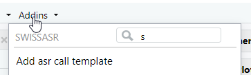

Participant safety is a big issue in clinical trials and reporting safety related events to the authorities is mandatory for certain trial types. One aspect of this is the annual safety report (ASR) which contains both summary information and listings of safety events. The SwissASR R package helps in compiling this report.
Provide a dataframe with the given variables and the function will return a filled out (as far as possible - some things require PI input) ASR in MS Word format. This could then be forwarded to the PI for supplemental details, signing and submission to the relevant governing bodies.
Example usage
Installing the package
The package can be installed from CTU Bern’s package universe:
install.packages('SwissASR', repos = c('https://ctu-bern.r-universe.dev', 'https://cloud.r-project.org'))Using the package
Load it as usual:
The main function is called asr. It has a lot of options, but these are mostly for generalizability. If your dataframe matches the default variable names, then there is no need to use most options.
Assuming your dataframe is called sae_data, then the function could be used as follows for the IMP. This will create a file called tmp.docx in your working directory (the filename is controllable via the target option).
asr(sae_data)Default values are then used for most parameters, which is not ideal. Changing the default settings will in practice be required for every study. SwissASR includes an RStudio addin for a skeleton call, including annotations. Use it from the addins menu:

An example call might look as follows:
asr(data,
target = glue("asr_{sys.Date()}.docx"),
trial_title = "Example trial name",
protocol_number = "1",
basec_number = "sdfsgfdhgfdh",
snctp_number = "sdfhehre",
swissmedic_number = "ergtrjhzt",
ec_name = "KEK Bern",
product_name = "Example product",
sponsor_contact = "Prof. Dr. Example",
inst_name_address = "Example institute, Example street, Example City",
n_centers_t = "10", # total - derive from database
n_centers_p = "20", # planned - from protocol
n_centers_c = "0", # closed - derive from database
n_centers_o = "15", # open - derive from database
n_pat_t = "1200", # target - from protocol
n_pat_e = "300", # enrolled - derive from database
n_pat_c = "111", # complete - derive from database
n_pat_p = "10" # prematurely terminated - derive from database
)It is envisaged that a script be written relatively early in the trial (before the first ASR is due) with the relevant fixed data (everything that cannot be derived from the database) and the other elements can be passed in once derived from the database. The safety data is then used to compile the tables and listings. The script can then be run each year to generate the ASR.